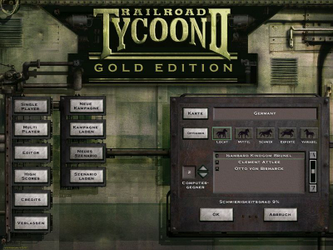
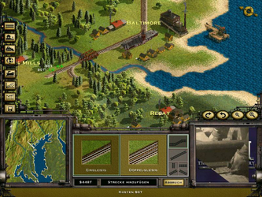

Railroad Tycoon II
Dieser Artikel wurde für die folgenden Ubuntu-Versionen getestet:
Ubuntu 16.04 Xenial Xerus
Zum Verständnis dieses Artikels sind folgende Seiten hilfreich:
Im Spiel Railroad Tycoon II Gold Edition gründet man eine Bahngesellschaft. Hier ist man als Vorstandsvorsitzender eingesetzt, hält die Geschicke der eigenen Bahn in der Hand und trifft Entscheidungen die das Spiel beeinflussen. Am Anfang eines jeden Szenarios bekommt man eine Aufgabe gestellt - diese muss im vorgegebenen Zeitrahmen erfüllt werden. Im Spiel kann man Schienen verlegen, Bahnhöfe bauen, Lokomotiven kaufen und je nach Warenangebot an jedem Bahnhof die Wagons anhängen. Neben Personenwagons gibt es Post- und Güterwagons...
Ziel des Spiels ist es ein großes und wirtschaftlich profitables Eisenbahnimperium aufzubauen.
Die Gold Edition des Spiels beinhaltet neben dem Hauptspiel die Erweiterung Railroad Tycoon 2: The Second Century. Dem Spieler stehen dadurch weitere Züge (u.a. TGV), neue Landkarten und Wirtschaftstypen zur Verfügung.
|  |  |
| Hauptmenü | Spieleszene |
Installation¶
Zur Installation [1] legt man die CD-ROM ins Laufwerk und lädt den Installer (Beta-Version) von liflg.org 
 oder holarse-linuxgaming.de herunter. Dieser beinhaltet alle Patches.
oder holarse-linuxgaming.de herunter. Dieser beinhaltet alle Patches.
Nachdem man die Ausführrechte [2] gesetzt hat leitet man die Installation [3] ein:
./rt.2_1.54c-multilingual_x86.mojo.run
Das Spiel ins Homeverzeichnis, z.B. nach ~/Spiele/rt2, installieren.
Nach erfolgreicher Installation wird unter "Anwendungen -> Spiele -> Railroad Tycoon 2" ein Starter angelegt. Diesem können Startparameter übergeben werden [5]:
Startoptionen¶
| Startoptionen | |
| Parameter | Beschreibung |
-w | Spiel startet im Fenstermodus. |
-s | Soundwiedergabe wird gestoppt. |
-h | weitere Optionen |
Szenarien¶
Zusätzliche Szenarien für das Spiel kann man im Internet herunterladen. Die gewünschte Karte, z.B. Alaska.zip entpacken [6], und in den Installationsordner ~/Spiele/rt2/maps kopieren. Alternativ können Karten auch in den Ordner ~/.loki/maps im Homeverzeichnis abgelegt werden. Dieser Ordner muss ggf. vorher erstellt werden. Die Karten können in den Spielekampagnen ausgewählt werden.
Hinweis:
Die Dateiendungen müssen entweder .map oder .mp2 lauten, da diese vom Spiel ansonsten nicht erkannt werden.
Multiplayer¶
Für den Mehrspieler-Modus im Ordner ~/.loki/rt2/ die Datei userprofile.txt bearbeiten [4].
Hier die vorgegebene IP-Adresse 0.0.0.0 durch die eigene IP ersetzen:
ipaddress=0.0.0.0
Diese Einstellung muß jeder Mitspieler vornehmen.
Leveleditor¶
Das Spiel kann durch eigene Level bereichert werden. Im Hauptmenü kann der Leveleditor über "Editor" gestartet werden. Im Handbuch ist die Erstellung eines eigenen Levels im Detail beschrieben.
Demo¶
Eine Demoversion des Spiels kann nach dieser Anleitung installiert werden.
Hinweis:
In der Demoversion können nur Szenarien gespielt werden, keine Kampangen und keine Mehrspieler-Partien.
Handbuch¶
Das Handbuch liegt entweder in gedruckter Form vor oder kann unter ~/rt2/Manual/Manual.html, mit einem Browser eingesehen werden.
Tastenkürzel¶
| Tastenkürzel | |
| Taste(n) | Funktion |
| F4 | Vollbild- / Fenstermodus |
| C | Einstellungen |
| Druck | Bildschirmfoto aufnehmen - dieses wird unter abgespeichert. |
| Q | Spiel beenden. |

Infobox¶
| Railroad Tycoon II | |
| Genre: | Wirtschaftssimulation |
| Sprache: |  |
| Veröffentlichung: | 1999 |
| Publisher: | Take-Two Interactive |
| Systemvoraussetzungen: | Prozessor mind. 200 MHz - mind. 16 MB RAM - 200 MB Festplattenspeicher |
| Medien: | CD (1) |
| Strichcode / EAN / GTIN: | 689524927057 |
| Läuft mit: | nativ |
- Erstellt mit Inyoka
-
 2004 – 2017 ubuntuusers.de • Einige Rechte vorbehalten
2004 – 2017 ubuntuusers.de • Einige Rechte vorbehalten
Lizenz • Kontakt • Datenschutz • Impressum • Serverstatus -
Serverhousing gespendet von